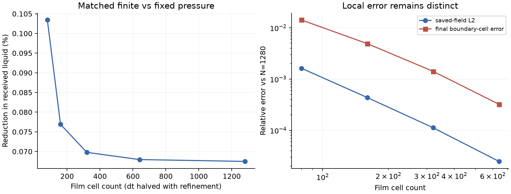
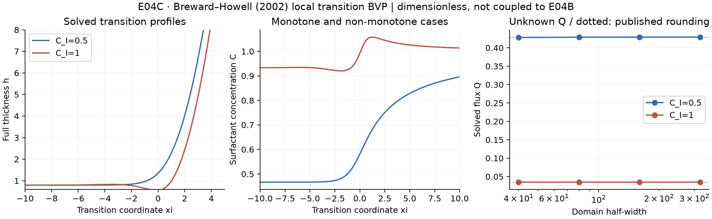

守恒的事件反馈
让液膜回缩释放的液体、活性剂和动量具有明确去向，比较有限速事件与瞬时删膜，研究边界及邻膜怎样传递或吸收扰动。
从排液与粗化，到泡沫的级联崩塌。研究液膜、Plateau 边界与气体交换如何共同塑造一次破裂的传播或终止。
Research in progress · 尚无完整泡沫闭环结果让液膜回缩释放的液体、活性剂和动量具有明确去向，比较有限速事件与瞬时删膜，研究边界及邻膜怎样传递或吸收扰动。
相同平均含液量，不同局部厚度与边界储液，是否会改变崩塌范围？通过匹配对照判断粗粒度模型遗漏了什么信息。
平缓期推进排液与气体交换，事件窗口解析回缩和邻膜响应。用误差—成本曲线检验效率，避免大步长跨过关键物理。
原生 C++ 求解闭合竖直边界的毛细—重力排液；流动系数来自独立截面 Stokes 求解。展示的不是预设动画轨迹。

红蓝曲线来自求解数据。全时域误差未被逐时刻界定；0.04214% 为保存时刻的最大相对场误差。
继承 DRIFT 的 SDS 框架膜完成 0.020 秒、4 步参考计算，力学与排液 Newton 失败均为0。终态记录1760个粒子，平均膜厚1.9592 μm；排入弯月面的液量相当于0.006098 μm膜厚。

20组原生计算、101,501个物理步；新增有限储液和三膜共享接口，复用不改动的 DRIFT 膜能量。主算例液量误差2.665×10⁻¹⁵，独立有量纲单步核对通过。

1280单元的排液差异约0.06749%；保留640单元未通过检查，继续加密后差异估计变化0.687%，通过本次2%门槛。小效应必须用配对加密核对。
完成10组 Breward–Howell 边值问题，求解通量约0.4292125与0.03489455，按四位小数与论文0.4292、0.0349一致。包含计算域与求解容差加密；Q为未知量。

三张均匀膜与一个有限边界，四档时间步共150步和300次过渡区求解；同时计入体相与两界面表活。局部模型尚未覆盖空间泡沫、能量验证和实验匹配。
| 实验 | 输出 | 状态 |
|---|---|---|
| E00 · 截面导通率 | 256 → 2048 网格，最后两级 C 变化 0.921%；未证明绝对误差小于1% | 已执行 |
| E01 · 真实排液推进 | 1000 物理步，正性、液量守恒和能量耗散 | 已执行 |
| E02 · 时空参考 | 32 / 64 / 128 单元与 512 单元参考、步长减半 | 已执行 |
| E03 · 平衡诊断 | 零重力均匀态、静水平衡与导数检查 | 已执行 |
| E04 · 膜—边界交换 | 先复核继承的固定液池接口，再建立有限液量边界与物理通量 | 物理闭合待验证 |
| E04B · 有限储液诊断 | 20组 / 101,501步；配对加密到1280单元；物理过渡区仍待验证 | 已执行，简化边界 |
| E04C · 局部过渡区复算 | 10组BVP，论文通量舍入值一致；SI/有限边界耦合尚待完成 | 已执行，方程复算 |
| E05–E06 · 运动与粗化 | 移动网络、保守重映射、二泡传气及小泡簇 | 待前置验收 |
| E07–E08 · 破裂与闭环 | CODA 事件接口、传播/终止对照、2×2×2 消融 | 依赖未完成 |
闭合真实通量、正性和收支；用独立局部参考检验导通率与交换关系。网络接线是基础，不是最终贡献。
在同一个液量账本上推进几何和气体交换，量化膜厚、边界储液和界面状态的空间分布。
建立液膜—液环—边界—邻膜的转移接口；区分受控首孔、自然成核、膜冲击与飞滴机制。
从四泡/七泡闭环开始，用保留工况、合理基线、局部实验和误差—成本曲线审查候选贡献。
SI 单位、粒子表示、守恒搬运、动态边界含液量及出现级联视频均不足以单独建立创新。只有明确的新算法能力、可靠物理预测或可复验的机制证据，才支持贡献。静态网络或阈值删膜不能冒充完整闭环。
结果保留源代码校验值、参数、原始状态和数值检查。完整代码在⑥开发分支；本文网页仅展示公开研究资料，未发布本地机器路径或第三方论文全文。所有未完成能力均保持待验证状态。